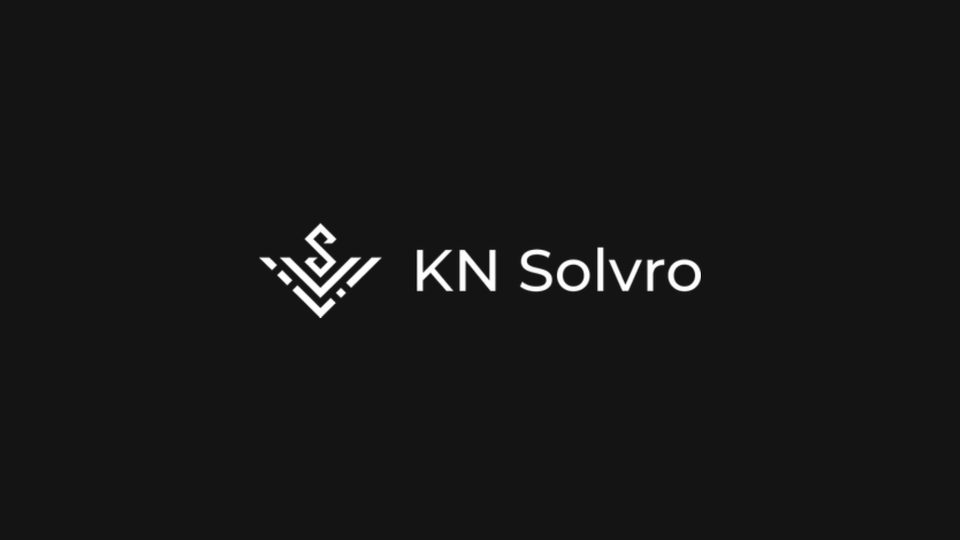
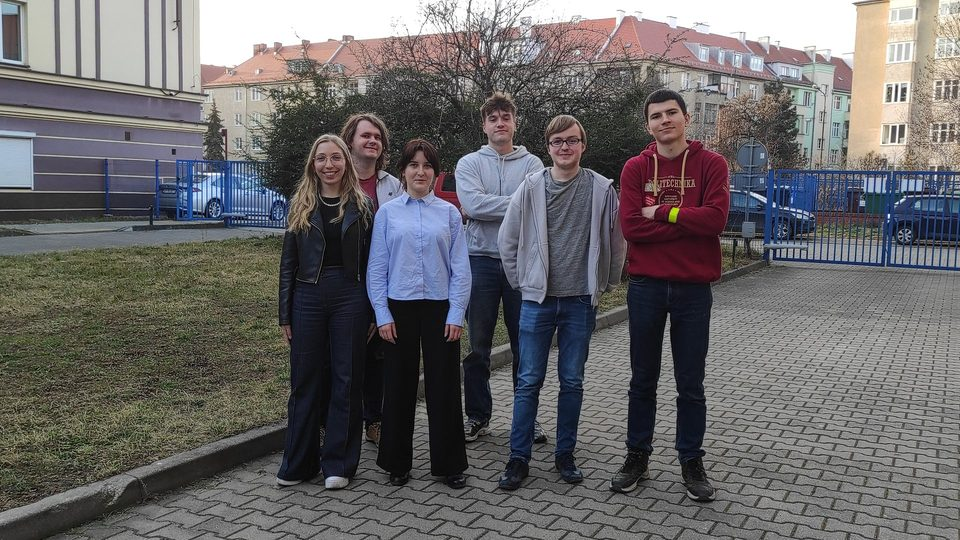
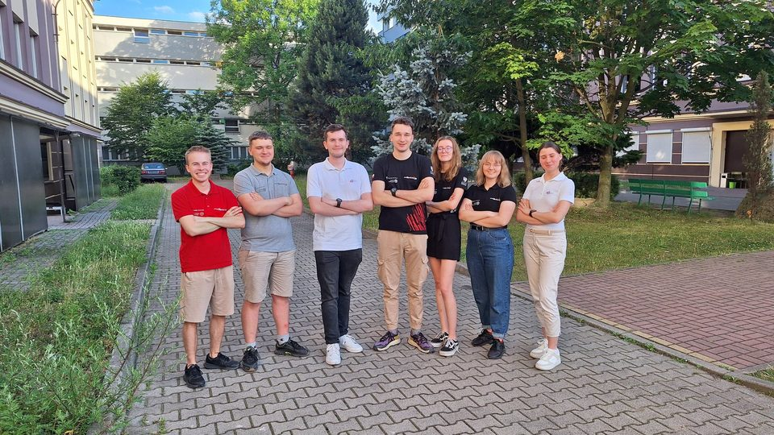

Case Koła
Realne wyzwania, realne zespoły.
Jak to się zaczęło
Case Koła powstał jako sztandarowa inicjatywa mająca zacieśnić współpracę między PMG a innymi organizacjami studenckimi Politechniki Wrocławskiej. Zanim ruszyła pierwsza edycja, opracowaliśmy zasady i regulamin współpracy oraz przeprowadziliśmy szkolenie wewnętrzne, przygotowujące członków koła do pracy z zespołami o zupełnie innym doświadczeniu i specjalizacji.
W listopadzie 2025 projekt został zaprezentowany podczas Seminarium PM Edukacja w Szkole Głównej Handlowej w Warszawie, w Strefie WOW — w wystąpieniu „Kiedy pomysły stają się projektami – przykłady z kół naukowych”.
-

Solvro
Diagnoza struktury i komunikacji w 150-osobowym kole.
Zobacz case -

QUBIT
Od koła bez struktury do jasnego podziału sekcji i ról.
Zobacz case -

Debate Lab
Finansowanie działalności koła — źródła, zasady, wnioski.
Zobacz case -

PWR Racing Team
Pierwszy partner projektu — od ruchomych oczekiwań do jednego narzędzia.
Zobacz case